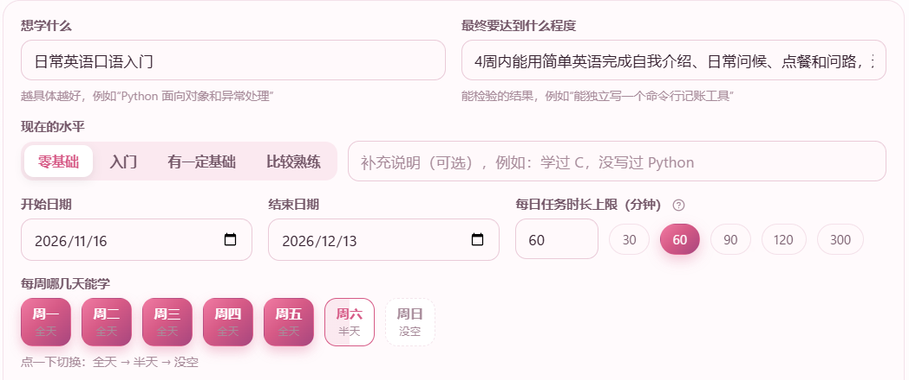

带 AI 老师的个人学习软件
说出想学什么，
说出想学什么，
每天学什么它来排
告诉它你的目标和截止日期，它帮你排好每天的学习计划。AI 老师上课讲解、出题判分，跟着你的进度走。
下载 Windows 版
免费 · 安装程序会自动装上最新版

它能帮你做什么
从排计划、上课、做题到复习，一个软件管到底。
对话建计划
说出目标和截止日期，先看大致安排，确认后再细排到每一天。
按天安排
每天学多久、每周哪几天学都能单独设；落后或超前多少，一眼就能看到。
AI 老师上课
2D 老师讲解，随时可以打断提问，已经会的内容可以跳过。
语音
说话直接转成文字；讲解也可以点开朗读。
导入资料
PDF、Word、PPT、EPUB、Excel、Markdown、网页都能导入，扫描件也能识别文字，还能针对资料提问。
练习与复习
每课都有练习并自动判分，答错的知识点标成“需要复习”，之后优先再出。
知识地图
把计划里的知识点和它们之间的关系画成图。
多设备同步
换一台电脑登录，计划和进度都在。
多家模型可选
DeepSeek、通义千问、Kimi 等，可以在设置里切换。
四步开始
下载安装只要几分钟。
下载安装
点下载按钮，运行安装程序，它会自动装上最新版。
邮箱注册
打开软件，用邮箱注册一个账号。
连上模型
在设置里填上你的模型密钥，例如 DeepSeek。
建第一个计划
说出想学什么、学到什么程度，剩下的交给它。